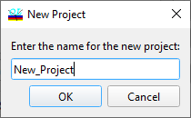

New Problem directory
New Problem directory (DS Mode)
Navigation: OptiLayer Menu Commands > File Menu > Problem Directory >
New Project
` <idh_problem_directory.html>`__ ` <idh_problem_directory.html>`__ ` <idh_file_transfer.html>`__

This dialog allows you to enter the name of the new Project directory where the current directory will be cloned in current Root directory.